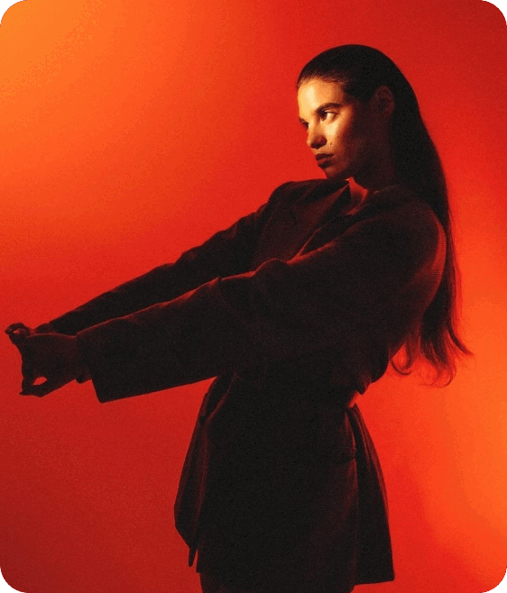

GroundAI
Meet GroundAI.Redefine space withintelligent design
Trusted by the leading brands
Nueral
GroundAI
Wids
Orinya
Xyreion
Skodia
GreenFlag
Nueral
GroundAI
Wids
Orinya
Xyreion
Skodia
GreenFlag
Craft experiences your
customers will remember
Modern MinimalistGROUNDAI CHOICE
Cozy ScandinavianGROUNDAI CHOICE
Rustic Wooden designGROUNDAI CHOICE
Bold IndustrialGROUNDAI CHOICE
Coastal RetreatGROUNDAI CHOICE
Japandi CalmGROUNDAI CHOICE
Art Deco LuxeGROUNDAI CHOICE
Me
My interior won't update, any ideas on how to use GroundAI?
Engageanddelightcustomers
01
2
3
It's completely
adaptable.
CustomizeGroundAItofityourstyleandneeds—whetheryouwantmodernminimalism,cozycomfort,orboldluxury.
Style preference
Room layout rules
Furniture & décor choices
GroundAI changed my approach

Skodia
GroundAIcompletelychangedhowIapproachedredesigningmyapartment.Insteadoffeelingoverwhelmedwithchoices.Itfeltlikehavingadesignerbymyside24/7.
Sophia Martinez,Homeowner & Interior Design Enthusiast